부산 북구 화명동 · 코오롱하늘채2차 · 24평
사진 속 이 분위기,
우리 집에도 어울릴까요?
광고에서 보신 거실의 실제 시공 사례입니다.
거실부터 주방, 현관, 안방까지 둘러보고
우리 집에서 바꾸고 싶은 부분을 찾아보세요.
이름·연락처·주소·평형으로 시작합니다.
신청만으로 계약이 진행되지 않습니다.
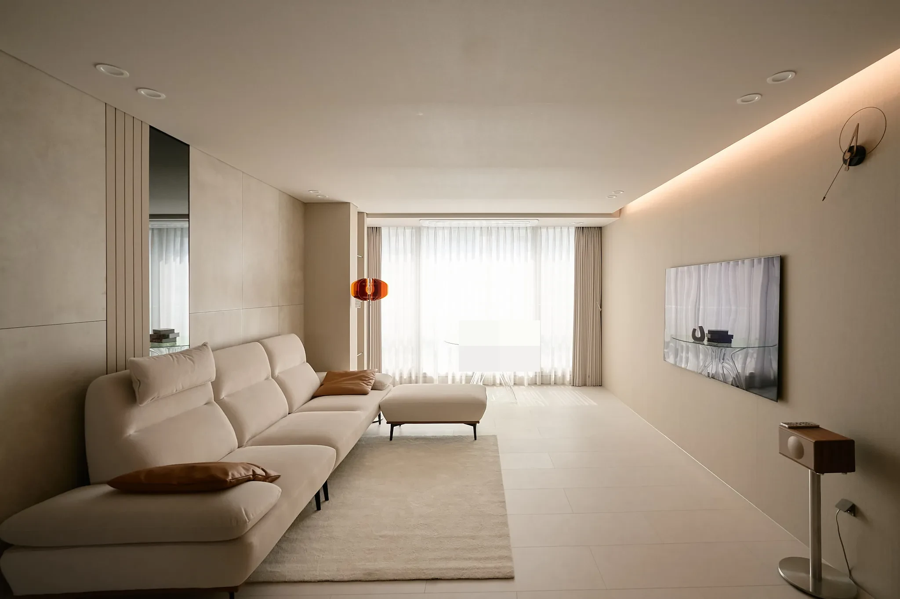
예쁜 사진에서, 우리 집의 기준으로
마음에 드는 장면 하나면
상담의 시작은 충분합니다.
“거실 조명이 좋아요.” “이런 대면형 주방을 원해요.”
원하는 분위기가 아직 선명하지 않아도 괜찮습니다. 마음에 드는 사진과 지금 집에서 불편한 점을 바탕으로, 생활과 예산에 맞는 공사 방향을 함께 정리합니다.
- 01
분위기
벽과 바닥의 톤, 낮과 밤의 조명
- 02
생활 동선
거실과 주방 사이, 가구와 통로의 간격
- 03
수납
보여둘 물건과 넣어둘 물건의 자리
01 · 거실
거실 전체부터,
소파 곁의 작은 디테일까지.
벽면을 따라 이어지는 간접조명과 밝은 패브릭, 낮은 가구의 조합입니다. 광고 속 장면뿐 아니라 반대편과 가까이에서 본 모습도 함께 확인해보세요.
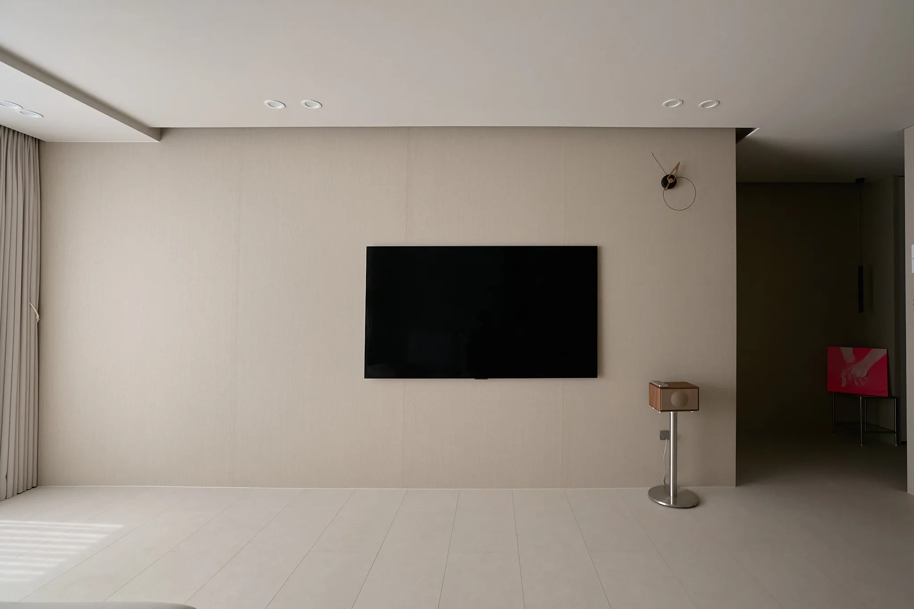
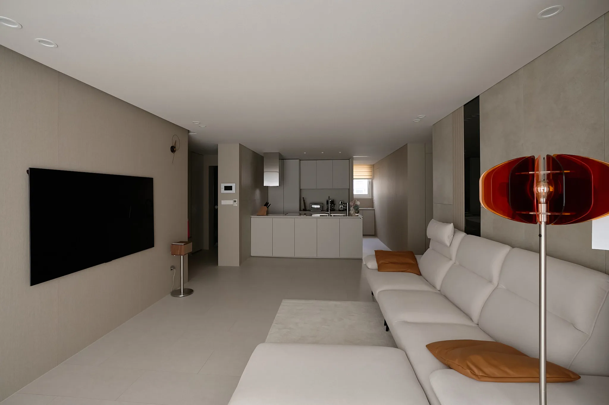
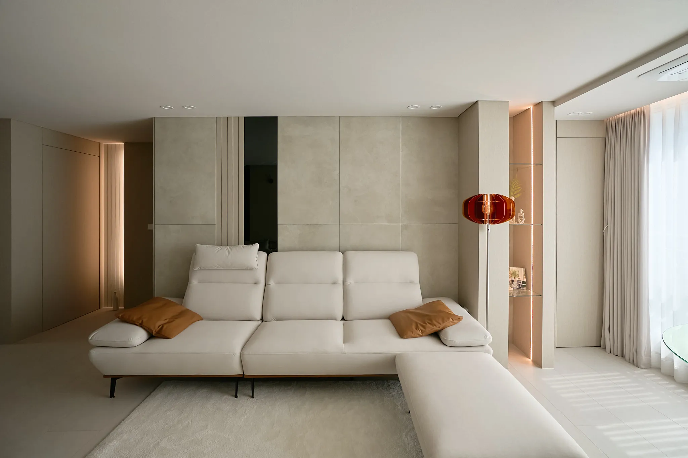

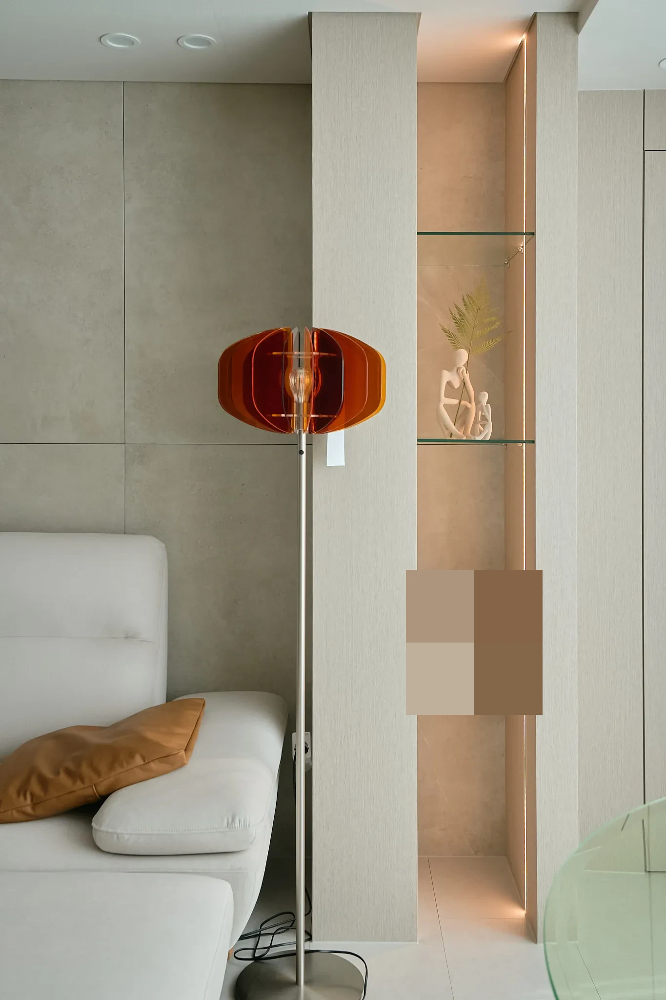
우리 집 상담 포인트TV와 소파를 어디에 둘지, 어떤 물건을 수납할지, 낮과 밤에 어떤 밝기를 원하는지 이야기해주세요.
02 · 주방
거실을 바라보는 주방,
안쪽 동선까지 살펴보세요.
대면형 아일랜드와 뒤편의 조리대·가전·수납이 한 공간에 이어집니다. 이 배치가 마음에 드셨다면, 우리 집에서도 작업 공간과 통로를 충분히 확보할 수 있는지부터 확인합니다.
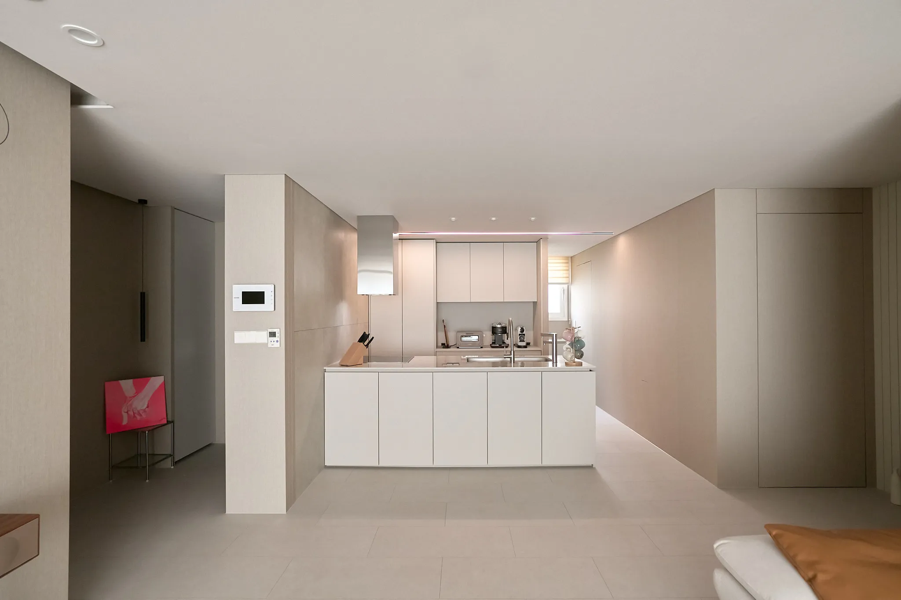

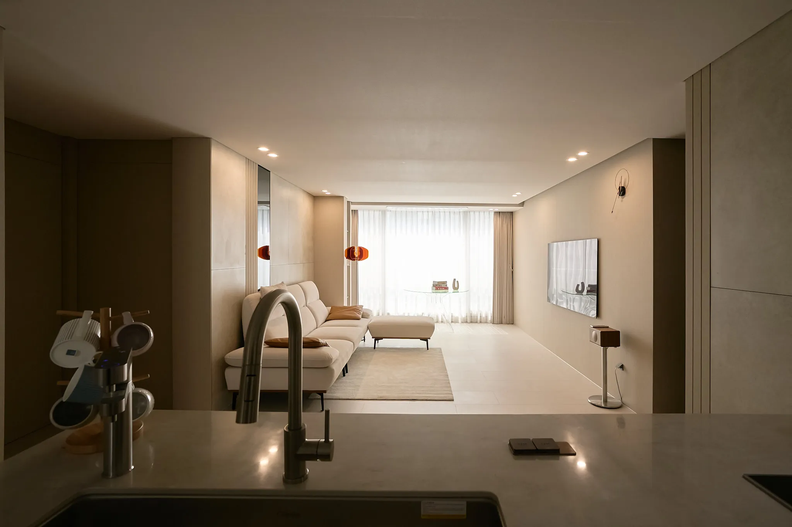
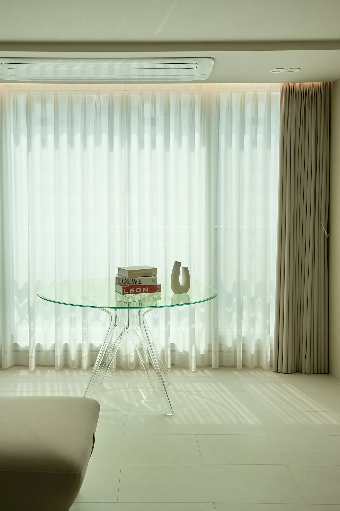

우리 집 상담 포인트사용할 가전의 크기, 자주 하는 요리, 식사하는 방식을 알려주세요. 보기 좋은 배치를 실제 생활에 맞춰 검토합니다.
우리 집이라면
이런 주방이 가능한지,
우리 집엔 어떤 배치가 맞을지.
사진을 고르셨다면 다음은 우리 집의 조건입니다. 바꾸고 싶은 공간과 예산의 우선순위부터 함께 이야기해보세요.
우리 집 상담 신청담당자가 신청 내용을 확인한 뒤 상담 일정을 안내합니다.
03 · 현관과 복도
집에 들어오는 순간부터,
수납과 동선이 이어지도록.
유리 중문 너머로 이어지는 현관, 밝은 수납장과 선반, 복도의 조명을 담았습니다. 한 방향의 사진만으로 놓치기 쉬운 입구와 안쪽 모습도 함께 보실 수 있습니다.
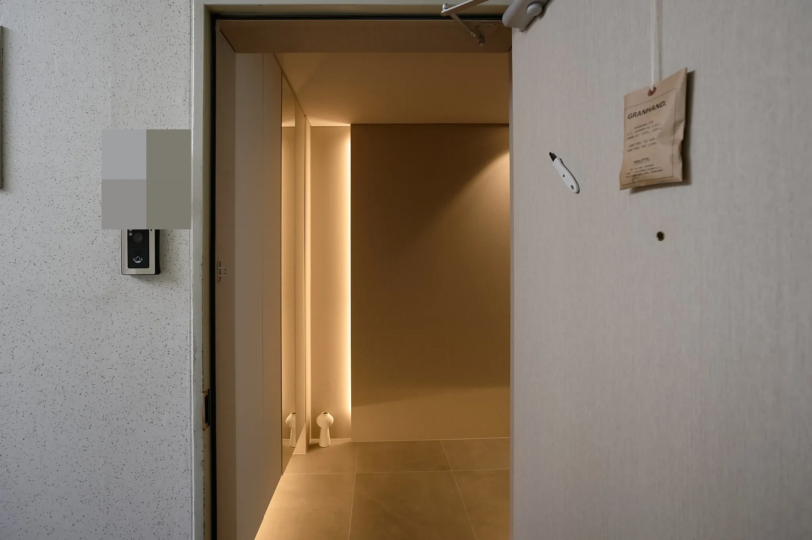

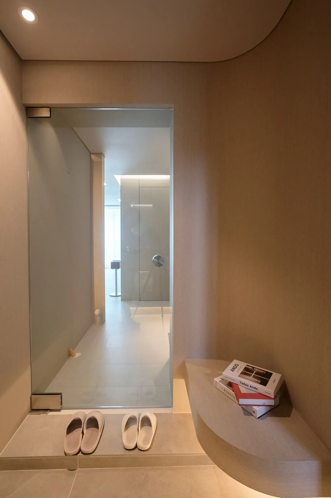

우리 집 상담 포인트신발·외투·외출용품을 어디에 둘지, 문을 열고 지나갈 공간이 충분한지 함께 살펴봅니다.
04 · 안방
잠들기 전의 빛과,
침대 주변의 여유.
침대 헤드와 커튼 상부의 간접조명, 반대편 가구 배치를 살펴보세요. 같은 분위기를 그대로 복제하기보다, 사용하는 침대와 수납량에 맞는 구성이 중요합니다.


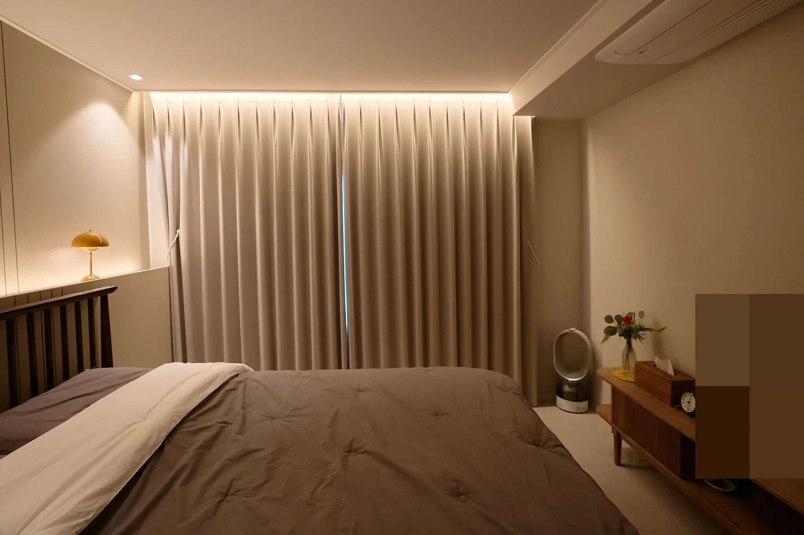
우리 집 상담 포인트침대 크기, 필요한 옷 수납, 잠들기 전 책을 읽는지 같은 생활 습관을 알려주세요.
모두 화명동 코오롱하늘채2차 24평의 실제 시공 사진입니다. 비슷한 구도는 덜어냈으며, 일부 사진의 가족사진과 세대 안내문은 개인정보 보호를 위해 가렸습니다. 화면과 조명에 따라 마감 색상이 다르게 보일 수 있습니다.
상담에서 함께 정리할 것
우리 집에 맞는 방향을
먼저 확인하세요.
- 01
신청 내용을 남겨주세요
이름·연락처·주소·평형이 기본 정보입니다. 예산이나 희망 일정 등 추가 정보는 선택해서 작성할 수 있습니다.
- 02
생활과 예산, 공사 범위를 이야기합니다
담당자가 상담 일정을 안내합니다. 마음에 든 사진과 현재 불편한 점을 바탕으로 원하는 방향과 대략적인 예산 범위를 함께 봅니다.
- 03
현장 확인 후 설계와 견적을 구체화합니다
같은 24평이라도 집의 상태와 공사 범위, 자재에 따라 달라집니다. 정확한 견적은 상담과 현장 확인을 거쳐 안내합니다.
신청 전에 궁금한 점
미리 확인하고,
부담 없이 시작하세요.
아직 예산이나 원하는 스타일이 정해지지 않았어요.
괜찮습니다. 바꾸고 싶은 공간이나 지금 가장 불편한 점부터 이야기해주세요. 상담 신청서에서 예산과 추가 정보는 선택 입력이며, 기본 정보부터 남길 수 있습니다.
같은 24평이면 사진처럼 시공할 수 있나요?
평수가 같아도 구조, 설비 위치, 집의 상태가 다릅니다. 마음에 드는 분위기를 출발점으로 삼되, 실제 적용 가능 여부는 상담과 현장 확인을 통해 검토합니다.
상담 비용은 어떻게 되나요?
1차 상담은 무료입니다. 현장 실측은 유료이며 본계약 시 공사비에서 차감됩니다. 실측 이후 설계·견적과 계약 단계를 거쳐 진행합니다. 자세한 내용은 진행 과정에서 확인하실 수 있습니다.
상담 신청을 하면 바로 계약이 진행되나요?
아닙니다. 신청 내용을 확인한 뒤 상담 일정을 안내하는 단계입니다. 공사 범위와 디자인, 견적, 일정을 확인하고 계약 여부를 결정합니다.
공간보감 · 우리 집의 다음 모습
마음에 든 장면을,
우리 집의 계획으로.
거실의 조명, 주방의 동선, 현관의 수납.
바꾸고 싶은 한 가지부터 들려주세요.
필수 정보 4가지와 개인정보 수집·이용 동의 후 신청합니다.
담당자가 내용을 확인한 뒤 상담 일정을 안내합니다.
신청만으로 계약이 진행되지 않습니다.